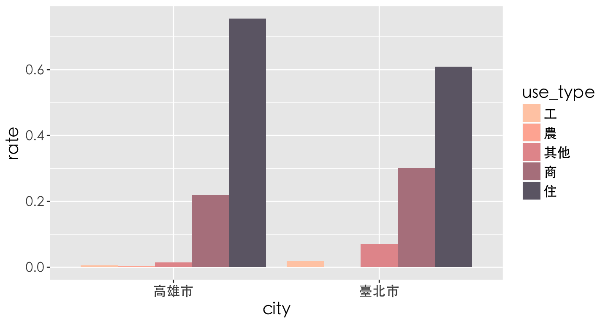
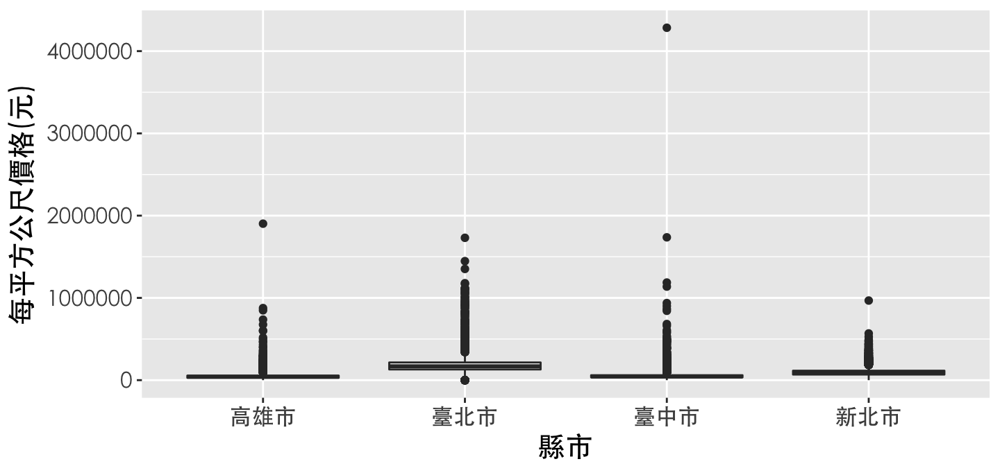

2017.05.17
課程綱要
Agenda
- Data Visualization
ggplot2in R- 基本介紹
- 基本架構
- 起手式(基本語法)
- 應用(各種圖形的呈現)
- Bar
- Line
- Histogram
- point
- 進階技巧傳承篇
- 互動視覺化
Data Visualization
- 清晰有效地傳達與溝通訊息
- 教學、研究、宣傳
- 美學、功能兼顧
- 統計圖形、訊息可視化
- 參考Johnson於DSHC meetp的DataViz 介紹
- Bonus from AlgerHighchart Introduction
ggplot2簡介

The Anatomy of a Plot

ggplot2基本架構
- 資料 (data) 和映射 (mapping)
- 幾何對象 (
geometric) - 座標尺度 (
scale) - 統計轉換 (
statistics) - 座標系統 (
coordinante) - 圖層 (layer)
- 刻面 (
facet) - 主題 (
theme)
ggplot2基本架構(2)
 source: http://goo.gl/Odt2Rs
source: http://goo.gl/Odt2Rs
ggplot2 基本語法
ggplot(data=..., aes(x=..., y=...)) + geom_xxx(...) + stat_xxx(...) + facet_xxx(...) + ...
ggplot描述 data 從哪來aes描述圖上的元素跟 data 之類的對應關係geom_xxx描述要畫圖的類型及相關調整的參數- 常用的類型諸如：
geom_bar,geom_line,geom_points, …
注意
- 使用
data.frame儲存資料 (不可以丟 matrix 物件) - 使用
long format(利用reshape2將資料轉換成 1 row = 1 observation)
馬上來個範例
# 先定義一個資料表
data <- data.frame(身份 = c("大學部","研究所","教授","講師","助教"),
人數 = c(20,15,5,2,3))
# plot
ggplot(data = data, aes(x = 身份, y = 人數)) +
geom_bar(stat = "identity") +
theme_grey(base_family = "STHeiti")
首先請先安裝以下套件
- 安裝套件
install.packages(c("ggplot2","dplyr","reshape2"),repos="http://cran.csie.ntu.edu.tw/")
- 載入套件
library(ggplot2) library(dplyr) library(reshape2)
注意：下載完套件一定要記得 library 才能使用喲！
一切從讀檔開始（CSV）
############### 絕對路徑 ###############
# 請輸入完整的檔案路徑
data <- read.csv("/Users/hsiaoling/Desktop/data/transaction.csv") #如果你是mac
# 或是
data <- read.csv("C:\\Users\\transaction.csv") #如果你是windows
############### 相對路徑 ###############
# 瞭解現在我們所處在的路徑
getwd()
# 設定我們檔案存放的路徑
setwd()
# 讀檔起手式
data <- read.csv("transaction.csv")
# 若讀入的是亂碼，試試以下
data <- read.csv("transaction.csv",fileEncoding = 'big5') #如果你是mac
# 或是
data <- read.csv("transaction.csv",fileEncoding = 'utf-8') #如果你是windows
欄位說明
| 英文欄位名稱 | 中文欄位名稱 |
|---|---|
| city | 縣市 |
| district | 鄉鎮市區 |
| trac_year | 交易年份 |
| trac_month | 交易月份 |
| trac_type | 交易標的 |
| trac_content | 交易筆棟數 |
| use_type | 使用分區或編定 |
| 英文欄位名稱 | 中文欄位名稱 |
|---|---|
| build_type | 建物型態 |
| build_ymd | 建築完成年月 |
| area_land | 土地移轉總面積.平方公尺. |
| area_build | 建物移轉總面積.平方公尺. |
| area_park | 車位移轉總面積.平方公尺. |
| price_total | 總價.元. |
| price_unit | 單價.元.平方公尺. |
以為開始了嗎？
- 進行分析前，先去了解資料的型態與特性
str(data)
'data.frame': 153598 obs. of 15 variables: $ city : Factor w/ 4 levels "高雄市","臺北市",..: 2 2 2 2 2 2 2 2 2 2 ... $ district : Factor w/ 99 levels "阿蓮區","八里區",..: 63 96 96 5 96 5 5 38 38 42 ... $ trac_year : int 102 102 102 102 102 102 102 102 102 102 ... $ trac_month : Factor w/ 12 levels "1","2","3","4",..: 1 1 1 1 1 1 1 1 1 1 ... $ trac_type : Factor w/ 2 levels "房地(土地+建物)",..: 1 1 2 1 1 2 2 2 2 2 ... $ trac_content: Factor w/ 327 levels "土地0建物0車位0",..: 57 57 58 57 57 62 62 58 64 167 ... $ use_type : Factor w/ 5 levels "工","農","其他",..: 5 4 4 4 5 5 5 5 1 5 ... $ build_type : Factor w/ 12 levels "辦公商業大樓",..: 6 12 10 12 7 7 7 12 1 12 ... $ build_ymd : int 701109 701228 970114 851218 970624 1010724 1010724 1000414 1010531 870910 ... $ area_land : num 34.96 10.71 8.51 4.7 30.97 ... $ area_build : num 60.6 104.5 51.9 39.4 185.2 ... $ area_park : num 0 0 8.55 0 0 ... $ price_total : num 6380000 12010000 10080000 4600000 23800000 ... $ price_unit : int 105263 114928 194070 116900 128510 218147 204716 174613 133648 27658 ... $ age : int 32 32 5 17 5 1 1 2 1 15 ...
身為資料分析師，一定要有的好習慣！
- 暸解基本的各變數統計量值
summary(data)
city district trac_year trac_month
高雄市:34460 淡水區 : 7172 Min. :102 12 :15206
臺北市:24238 西屯區 : 5974 1st Qu.:102 5 :15079
臺中市:37482 新莊區 : 5955 Median :102 4 :14682
新北市:57418 北屯區 : 5881 Mean :102 3 :14523
新店區 : 5873 3rd Qu.:102 7 :13805
中和區 : 5719 Max. :102 6 :13392
(Other):117024 (Other):66911
trac_type trac_content use_type
房地(土地+建物) :91613 土地1建物1車位0:66792 工 : 3233
房地(土地+建物)+車位:61985 土地1建物1車位1:41031 農 : 577
土地2建物1車位0:14537 其他: 8206
土地1建物1車位2: 7195 商 : 26205
土地2建物1車位1: 4787 住 :115377
土地3建物1車位0: 4691
(Other) :14565
build_type build_ymd area_land
住宅大樓(11層含以上有電梯):70725 Min. : 100602 Min. : 0
公寓(5樓含以下無電梯) :23211 1st Qu.: 780326 1st Qu.: 13
透天厝 :21954 Median : 870506 Median : 22
華廈(10層含以下有電梯) :20365 Mean : 868754 Mean : 42
套房(1房1廳1衛) : 9709 3rd Qu.: 991201 3rd Qu.: 36
店面(店鋪) : 2888 Max. :1030313 Max. :127088
(Other) : 4746
area_build area_park price_total price_unit
Min. : 0 Min. : 0 Min. : 0 Min. : 0
1st Qu.: 85 1st Qu.: 0 1st Qu.: 4900000 1st Qu.: 42685
Median : 124 Median : 0 Median : 8400000 Median : 67880
Mean : 153 Mean : 25 Mean : 12879580 Mean : 86176
3rd Qu.: 179 3rd Qu.: 9 3rd Qu.: 14580000 3rd Qu.: 111173
Max. :79669 Max. :2400000 Max. :8800000000 Max. :4284119
NA's :461
age
Min. :-1
1st Qu.: 3
Median :15
Mean :15
3rd Qu.:24
Max. :92
質化 vs 量化：Bar chart
Bar chart
geom_bar- 先來看看2013年在各縣市的案件交易量
thm <- function() theme(text=element_text(size = 15, family = "STHeiti")) # 控制字體與大小
# STHeiti是只有Mac才有的字體, 用來解決Mac系統中文顯示錯誤的問題
# Windows系統使用者請忽略 `+ thm()` 指令
data %>% ggplot(aes(x=city)) + geom_bar(stat = "count") + thm() # stat = "count" 算個數
Bar chart
- 看臺北市各行政區的案件交易量
# 資料整理 data %>% filter(city == "臺北市") %>% group_by(district) %>% summarise(amount=n()) -> table
# A tibble: 12 × 2
district amount
<fctr> <int>
1 北投區 2416
2 大安區 1755
3 大同區 1092
4 南港區 989
5 內湖區 3598
6 士林區 1859
7 松山區 1556
8 萬華區 1584
9 文山區 2197
10 信義區 1585
11 中山區 4410
12 中正區 1197
Bar chart
table %>% ggplot(aes(x=district,y=amount)) + geom_bar(stat = "identity") + thm() # stat='identity'以表格的值做為bar的高度

Bar chart
- 如何控制長條圖的排序呢？
# 看看這個變數的屬性類型 class(table$district)
[1] "factor"
# 根據amount大小，遞減排序設定level順序
table$district <- factor(table$district,
levels = table$district[order(desc(table$amount))])
# order : 給予你由小到大（desc:由大到小）的元素排序位置
Bar chart
table %>% ggplot(aes(x=district,y=amount)) + geom_bar(stat = "identity") + thm() + labs(titles = "臺北市各行政區交易量", x = "行政區", y = "案件數")
# lab用來幫圖形的標題、x軸與y軸做命名
挑戰
- 計算台北市&高雄市的各交易標的(trac_type)所佔比例
Source: local data frame [10 x 4]
Groups: city [2]
city use_type amount rate
<fctr> <fctr> <int> <dbl>
1 高雄市 工 196 0.01
2 高雄市 農 123 0.00
3 高雄市 其他 532 0.02
4 高雄市 商 7582 0.22
5 高雄市 住 26027 0.76
6 臺北市 工 442 0.02
7 臺北市 農 3 0.00
8 臺北市 其他 1709 0.07
9 臺北市 商 7323 0.30
10 臺北市 住 14761 0.61
參考解答
data %>% filter(city == "臺北市" | city == "高雄市" ) %>% group_by(city,use_type) %>% summarise(amount = n()) %>% mutate(rate = round(amount/sum(amount),2) ) -> table
Bar chart：stack
table %>% ggplot(aes(x = city, y = rate, fill = use_type)) + geom_bar(stat = 'identity', position = 'stack') + thm() # stack類別堆疊

Bar chart：dodge
table %>% ggplot(aes(x = city, y = rate, fill = use_type)) + geom_bar(stat = 'identity', position = 'dodge') + thm() # dodge類別並排
量化 vs 量化：Line chart
Line chart
- 各月份交易量
data %>% group_by(trac_month) %>% summarise(amount=n()) -> table table %>% ggplot(aes(x=trac_month,y=amount,group=1)) + geom_line() + thm()

Multiple Line
- 台北市和高雄市的各月份交易量比較
data %>% group_by(city,trac_month) %>% summarise(amount=n()) -> table table %>% ggplot(aes(x=trac_month,y=amount,group=city,color=city)) + geom_line() + thm()
Histogram
Histogram
data %>% ggplot(aes(x=age, y =..count..)) + geom_histogram()

Histogram
data %>% ggplot(aes(x=age, y =..density..)) + geom_histogram()
Histogram
data %>% ggplot(aes(x=age, y =..density.., fill =..count..)) + geom_histogram(binwidth=.5)

Histogram + density
data %>%
ggplot(aes(x=age,y=..count..)) +
geom_histogram(binwidth=.5,
colour="black", fill="white") +
geom_density(alpha=.2, fill="#FF6666")

boxplot
data %>% ggplot(aes(x=city,y=price_unit)) + geom_boxplot() + thm()
data %>% ggplot(aes(x=city,y=log(price_unit))) + geom_boxplot() + thm()

Scatter plot
Scatter plot
geom_point
iris %>% ggplot(aes(x=Sepal.Length, y=Petal.Length, color=Species)) + geom_point(shape=1, size=2) # shape控制圖示；size控制點的大小

Scatter plot
- 參數放在aes()函數裡面，表示資料依據指定欄位內容做不同的shape/size變化
iris %>%
ggplot(aes(x=Sepal.Length, y=Petal.Length,
color=Species, shape = Species, size = Species)) +
scale_shape_manual(values=c(1,5,7)) + # 控制 shape 顯示圖示
scale_size_manual(values=c(1,2,3)) + # 控制圖示 size 顯示大小
geom_point()
進階技巧
statistics
data %>% filter(district == "大同區") %>% ggplot(aes(x = area_build, y = price_total)) + geom_point() + stat_smooth()+ thm()

facet
- 資料整理
data %>% group_by(city,trac_month) %>% #選擇年度、醫療層級、縣市作為分群 summarise(total = n()) -> table # 計算分裙下的總人數
facet
theme(axis.text.x = element_text(angle = 90, hjust = 1)) #控制字的方向
coord_flip()
table %>%
ggplot(aes(x = trac_month, y = total ,fill = city))+
geom_bar(stat='identity') + thm() +
facet_wrap( ~ city , nrow = 2)
coord_flip()
table %>%
ggplot(aes(x = trac_month, y = total ,fill = city))+
geom_bar(stat='identity') + thm() +
facet_wrap( ~ city , nrow = 2) +
coord_flip()

圖形輸出
- 利用RStudio UI介面存擋
- 畫完圖之後，再存檔~~
ggsave('檔案名稱')
ggsave("plot.pdf", width = 4, height = 4)
ggsave("plot.png", width = 4, height = 4, dpi = 300)
學習資源
掌握心法後，如何自行利用R解決問題
- 了解自己的需求，詢問關鍵字與函數
- Taiwan R User Group
- ptt R_Language版
- R軟體使用者論壇
- StackOverflow
- 歡迎來信 ling32342@gmail.com 與我一起交流！